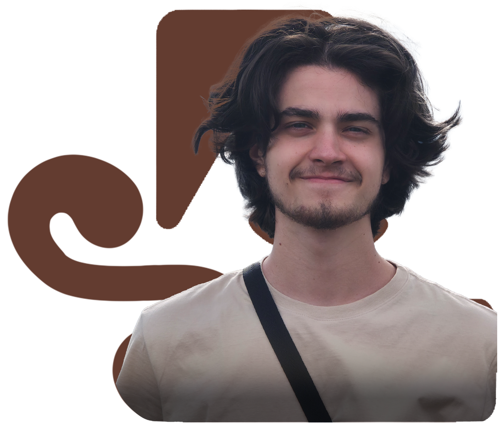
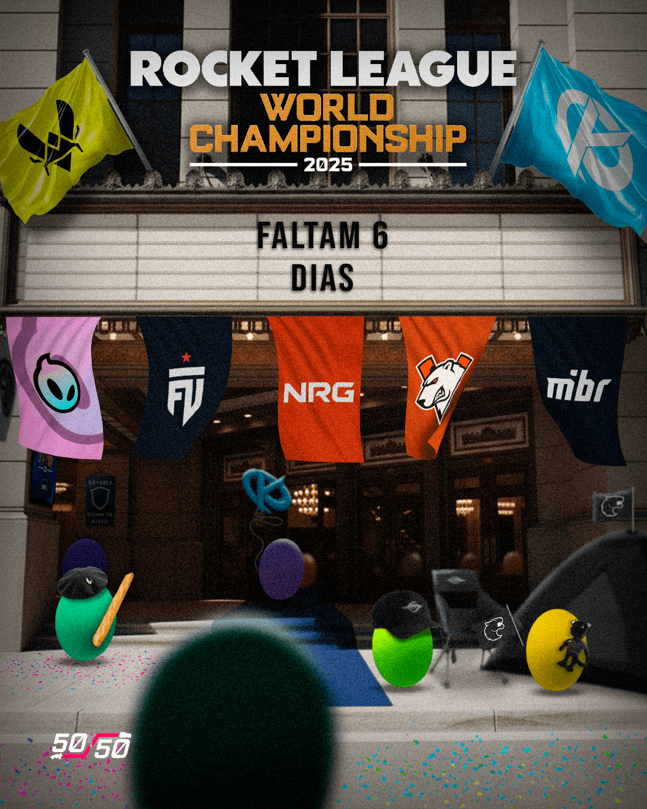
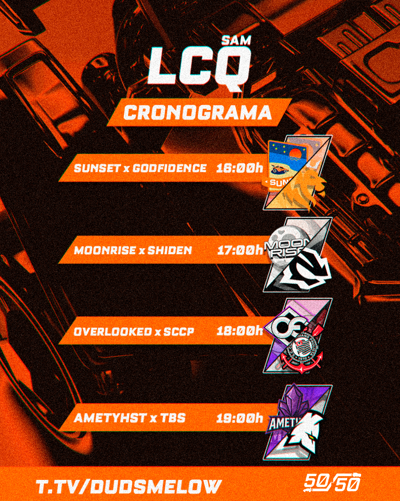
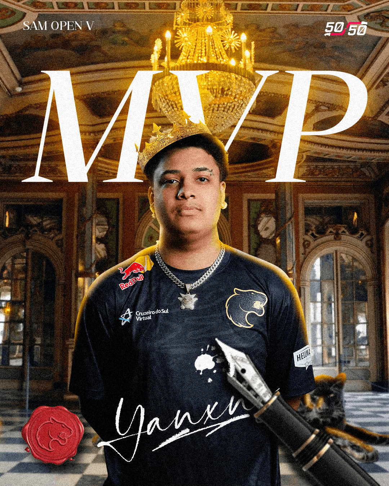
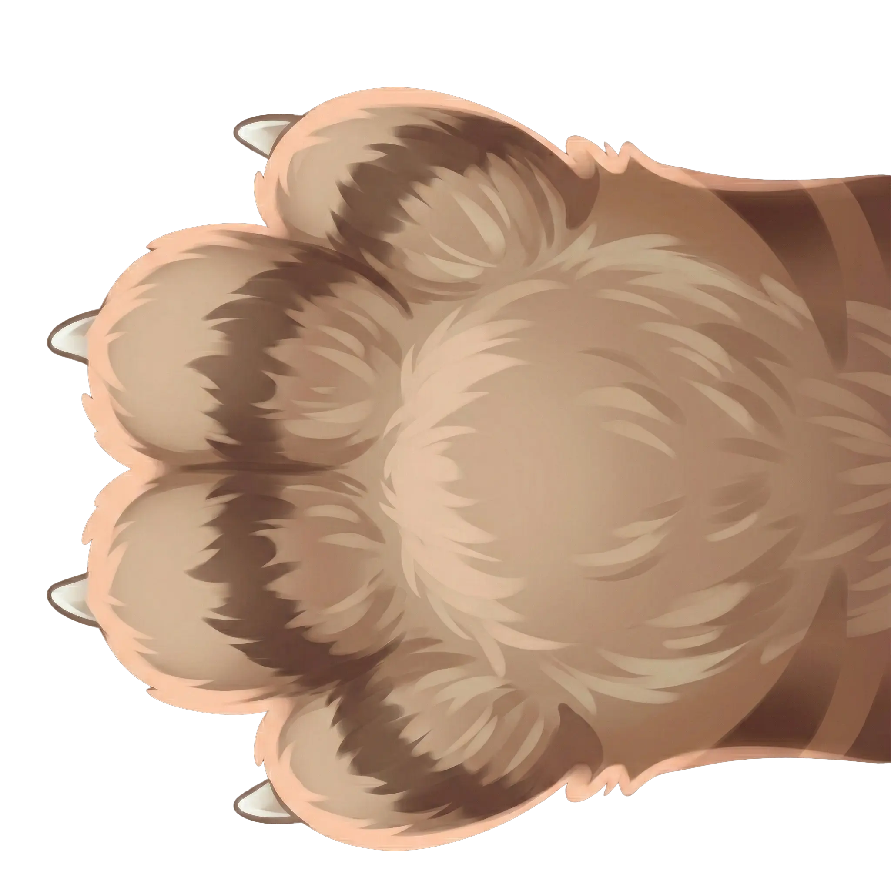

✦ Clique e segure, e crie você também ✦
↓ Arraste para desenhar nessa tela ↓

Catarinense, curioso de carteirinha, criativo assumido e, segundo dizem, tagarela quando a conversa está boa, Lucas Santiago é designer e editor de vídeos brasileiro, especialista em criar identidades visuais que marcam e conteúdos que fazem rir.
No mercado desde 2021, atende qualquer cliente que tenha uma boa ideia para transformar em social media, design gráfico ou vídeos humorísticos. Seu trabalho mistura consistência, originalidade e aquele toque de irreverência que faz cada projeto se destacar.
Quando não está mergulhado em pixels e timelines, Lucas vive sonhando alto e pensando em novas formas de transformar ideias em experiências visuais memoráveis, porque criar, para ele, é sempre diversão com propósito.
UM POUCO MAISPortfólio



Portfolio
Z6 - PROJETO PRÓPRIO
AION ASSESSORIA
Se você curtiu o meu trabalho e acredita que posso agregar valor ao seu projeto, negócio ou conteúdo, vai ser um prazer trocar uma ideia com você. Estou pronto para entender seus desafios e transformá-los em soluções visuais criativas, consistentes e que realmente chamam atenção. Cada projeto que assumo recebe atenção total, direção clara e execução caprichada. Clique no botão abaixo e vamos fazer sua empresa sair da caixa!
ENTRE EM CONTATOSe o seu projeto precisa de direção criativa, consistência visual e uma execução de alto nível, estou pronto para conversar. Acredito que resultados de impacto nascem de alinhamento, estratégia e uma visão clara do que se quer construir. Trabalho ao lado de clientes que valorizam identidade, presença e conteúdo que engaja, de marcas e profissionais a projetos pessoais que pedem atenção e criatividade. Preencha o formulário abaixo com o máximo de detalhes sobre sua demanda. Vou analisar com cuidado e retornar para dar o próximo passo.
